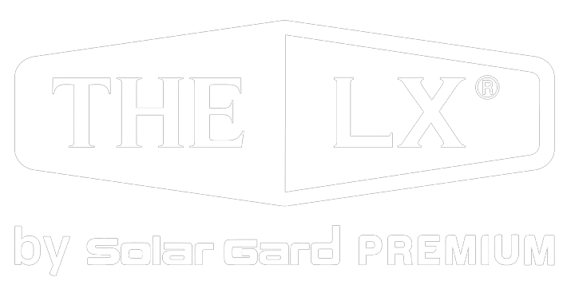
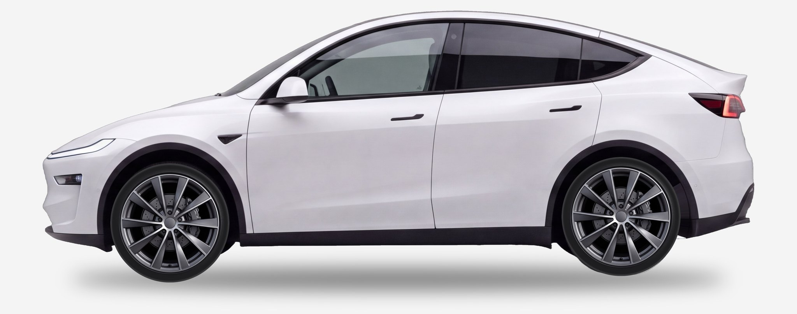
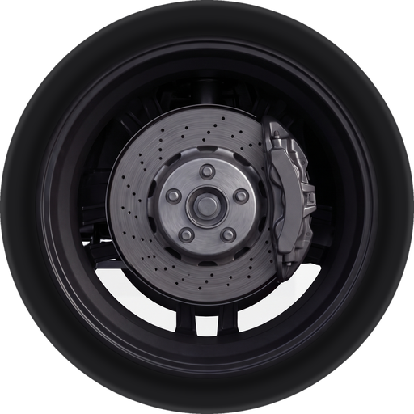
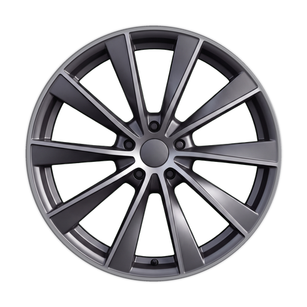
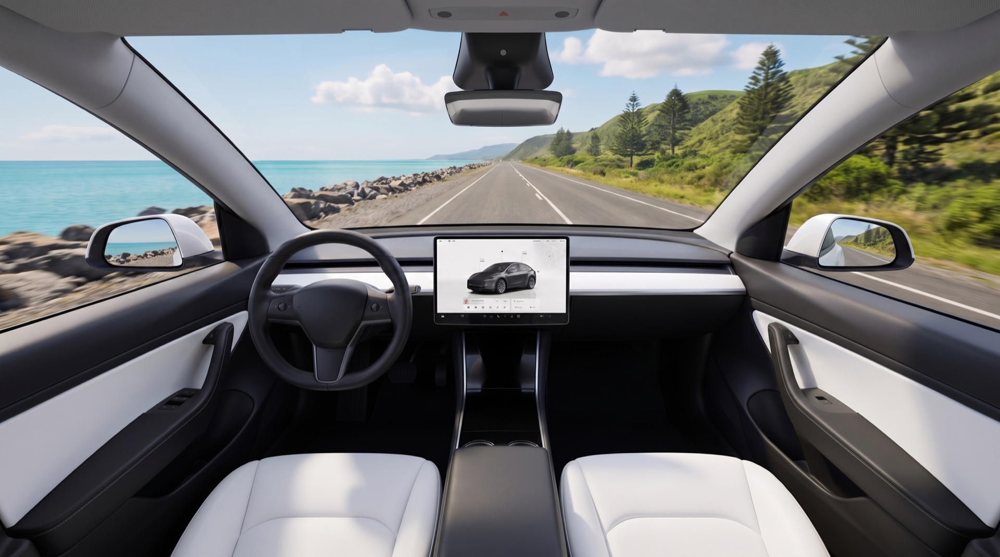
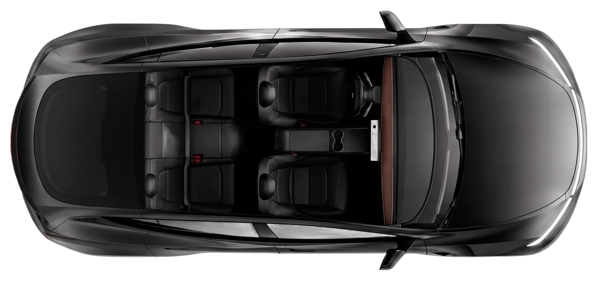
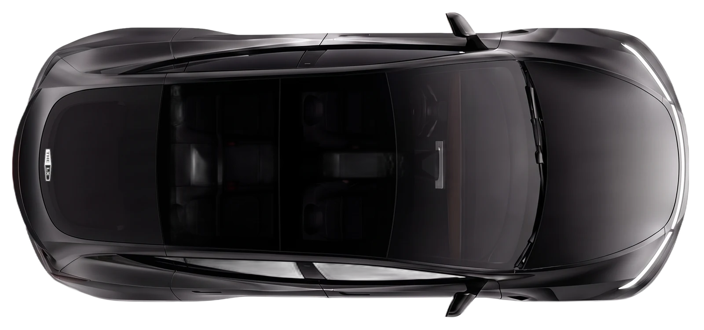
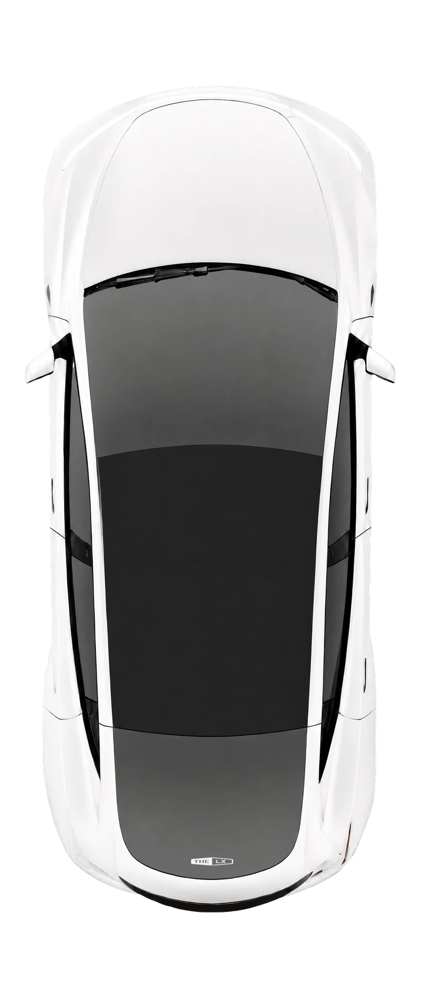
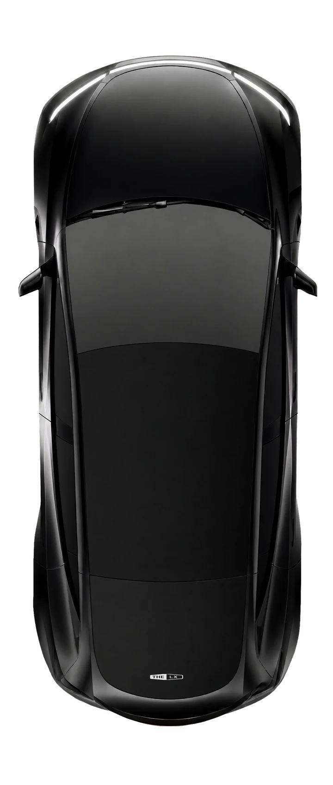
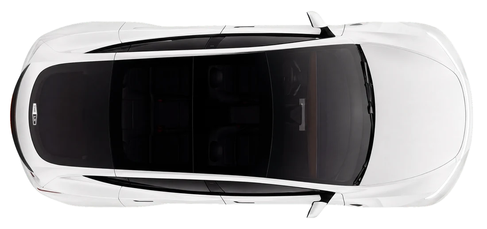

앞유리 · 풀 메탈 스퍼터링

for Tesla Owners차 안을 공간으로 설계한 최초의 필름
테슬라 틴팅을 가장 먼저,
가장 정교하게 완성하는 곳
X THE LX for Tesla Owners
기술로 선택받은 필름
THE LX가 시공한 차,
다섯 대 중 한 대는 테슬라입니다
2024년부터 2026년까지 발급된 THE LX 보증서 기준입니다.
64%제니스IR을 골랐습니다THE LX 라인업의 세라믹 필름 · Xenith IR
30/15앞유리 농도 30 · 옆유리 농도 15농도는 빛이 들어오는 비율, 숫자가 낮을수록 어둡습니다 · 열에 일곱이 앞유리 30



Xenith IR 제니스 IR가장 진보된 세라믹 소재. 어떤 차에도 어울리는 비크 블랙.왜 XENITH인가전기차 오너에게 사랑받는 이유. 확실한 열 차단, 방해받지 않는 신호, 선명한 시야, 눈부심 없는 주행. 그게 Xenith입니다.제품 페이지

천장의 빛
Xenith IR
천장으로 들어오는 빛까지.
가장 진보된 세라믹 소재. 어떤 차에도 어울리는 비크 블랙.
왜 XENITH인가
전기차 오너에게 사랑받는 이유. 확실한 열 차단, 방해받지 않는 신호, 선명한 시야, 눈부심 없는 주행. 그게 Xenith입니다.
UV 차단율99%+ · PA+++ SPF 285
총 태양에너지 차단 (TSER)68%
가시광선 투과율 (VLT)8 ~ 56%
내구성 보증5년
* 농도 5 기준 최대 TSER · 농도 라인업: 5–50
카드 1 제목 자리
카드 1 본문 자리 — 앞유리에 무엇을, 왜.
카드 2 제목 자리
카드 2 본문 자리.
카드 3 제목 자리
카드 3 본문 자리.
카드 1 제목 자리
카드 1 본문 자리 — 유리 지붕에 무엇을, 왜.
카드 2 제목 자리
카드 2 본문 자리.
카드 1 제목 자리
카드 1 본문 자리 — 측후면에 무엇을, 왜.
카드 2 제목 자리
카드 2 본문 자리.
XENITH IR · 제니스 IR
차세대 세라믹 기술로 탄생한
업계 최정상급 IR 필름
현재 사용 가능한 가장 진보된 세라믹 소재와 생고뱅 솔라가드의 독점 기술로 만들어진 IR 라인. 최대 68%의 총 태양에너지 차단, 셀룰러·GPS 신호의 명확한 전송, 모든 바디 컬러에 어울리는 비크 블랙.
- 최대 68%의 업계 최정상급 TSER(총 태양 에너지 차단율)
- GPS 수신 장애가 없는 전파 친화적 구조
- 사고시 유리 비산 방지로 2차 사고 예방
- 모든 외관을 보완하는 풍부한 블랙 컬러
- 눈부심 감소 및 유해 자외선 99% 차단


열 차단세라믹 계열 IR 제품군 중 가장 뛰어난 열 차단 성능 (최대 TSER 68%)
내부 반사율5% 이하의 낮은 내부 반사율로 야간 시야 확보에 유리
전파 친화적GPS 수신 장애가 없는 전파 친화적 구조
비산 방지사고시 유리 비산 방지로 2차 사고 예방
조화로운 컬러차량의 모든 바디 컬러에 어울리는 비크 블랙 컬러의 필름으로 조화롭고 고전적인 외관 완성
- 열 차단세라믹 계열 IR 제품군 중 가장 뛰어난 열 차단 성능 (최대 TSER 68%)
- 내부 반사율5% 이하의 낮은 내부 반사율로 야간 시야 확보에 유리
- 전파 친화적GPS 수신 장애가 없는 전파 친화적 구조
- 조화로운 컬러차량의 모든 바디 컬러에 어울리는 비크 블랙 컬러의 필름으로 조화롭고 고전적인 외관 완성
- 시공 작업 편의성높은 작업 편의성으로 시공 실패율을 줄이는 동시에 시공 완성도 극대화
TESLA OWNERS · 오너 조합
테슬라 오너가 사랑하는 조합
커스텀 1전면 LX · 측후면 LX · 루프 제니스IR전면과 측후면으로 들어오는 복사열을 반사하고, 루프는 세라믹으로.

전면LX · 풀메탈 스퍼터
루프제니스IR · 나노 세라믹
측후면LX · 풀메탈 스퍼터
전면 LX · 루프 제니스IR · 측후면 LX
커스텀 2전면 LX · 측후면 제니스IR · 루프 제니스IR전파 간섭 우려와 비용을 함께 고려하는 선택.

전면LX · 풀메탈 스퍼터
루프제니스IR · 나노 세라믹
측후면제니스IR · 나노 세라믹
전면 LX · 루프 제니스IR · 측후면 제니스IR
필름 한 장에 탄소까지 생각했습니다.
환경성적표지(EPD) 인증, THE LX
LX SAVES YOUR HEALTH, WEALTH, & EARTH.
Xenith IR 제원
농도별 성능
농도 5 · VLT 8%TSER 68%
농도 15 · VLT 16%TSER 66%
농도 30 · VLT 31%TSER 61%
농도 50 · VLT 56%TSER 51%
소재
필름 등급나노 세라믹
열차단 방식열흡수
자외선99%+ · PA+++ SPF 285
컬러비크 블랙
제조원생고뱅 솔라가드 · Saint-Gobain

보증 · 기록
웹사이트에 표시된 사진과 수치는 참고용이며 실제 차량·시공 조건에 따라 다를 수 있습니다. TSER·VLT는 Xenith IR 농도별 제조사 스펙입니다. 반사·흡수 방식 수치는 일반 사례이며 특정 제품의 측정값이 아닙니다.
for Tesla Owners
시공 상담 받기THE LX는 테슬라(Tesla, Inc.)와 무관한 독립 브랜드이며, 이 페이지의 차종명은 시공 대상 차량을 표시하기 위한 것입니다. 테슬라의 상표·로고를 사용하지 않습니다.
© 2026 THE LX · Solar Gard Premium · Saint-Gobain